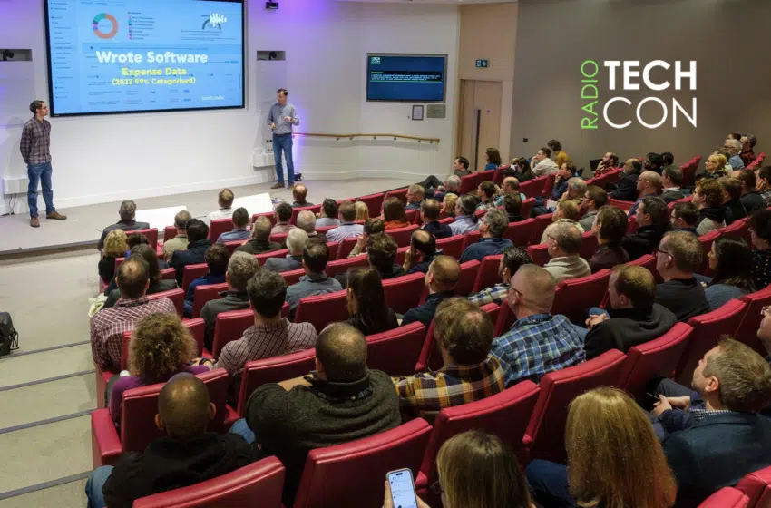

Our Story
TechCon began in 2012 as a small gathering of software engineers and developers eager to share their ideas and learn from one another. Originally hosted in a single conference room at a local tech hub, the event quickly gained momentum due to its practical sessions and community-driven atmosphere. Over the years, TechCon has expanded into an internationally recognized event that unites thousands of professionals across diverse tech disciplines — from cloud computing and cybersecurity to data science and AI. Each year, we innovate further, embracing new technologies and fostering a culture of shared knowledge and collaboration.
Photos from our journey:
- A snapshot from TechCon 2014, featuring our first international keynote speaker. View memories
- The packed main hall from TechCon 2018, where we first introduced the DataCon track.View memories
- Last year’s virtual keynote delivered from our XR stage.View memories
